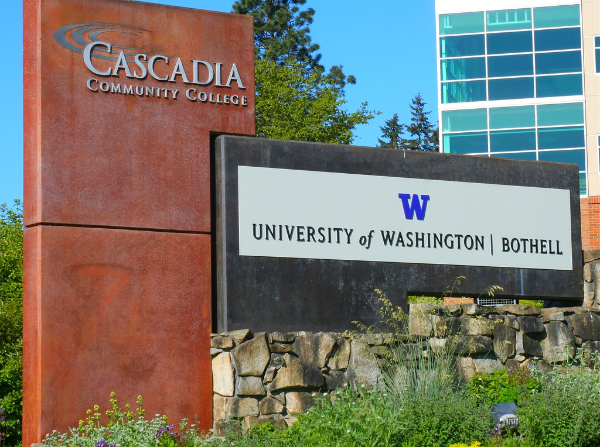

With nearly 6,000 students and 55 degree programs, UW-Bothell has a reputation for access to excellence and a leading-edge educational experience. The campus boasts state-of-the-art technology and breathtaking views of nearby wetlands and Cascade Mountains. Retention and graduation rates are in the top 15% of similar public four-year universities in the nation. Graduates are committed to service, and were employed by 375 external organizations last year, including Fortune 100 companies, not-for-profit organizations and government agencies. This year, 50% of incoming first-year students and 39% of incoming transfers were the first in their families to earn a four-year degree.
Map of UW-Bothell ↑
Here's a photo of a UW-Bothell entrance sign. The campus is adjacent to Cascadia Community College.
Go Huskies!
(the description is paraphrased from the University's "About" website)